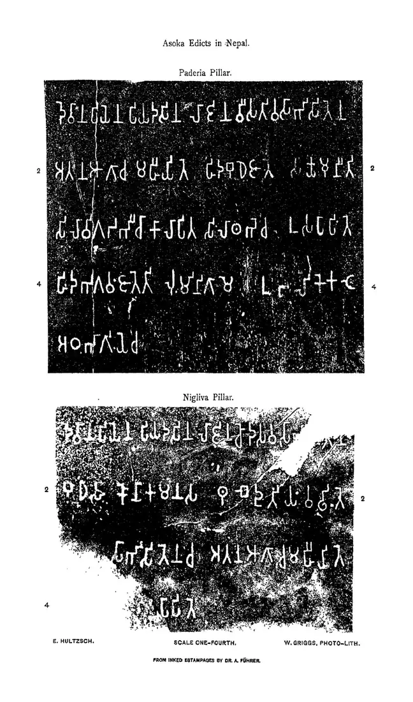

The Asôka edicts of Paḍariā and Niglīva
No. 1.— THE ASOKA EDICTS OF PADERIA AND NIGLIVA.
By G. BÜHLER, PH.D., LL.D., C.I.E.
THE two new Aśôka edicts of Pađëria and Nigliva are edited here according to inked estampages, furnished by their discoverer, Dr. A. A. Führer, who found the second in March 1895 and the first in December 1896. Both come from the Nepal Terai, where Nigliva is situated 38 miles north-west of the Uska Bazar station of the Bengal and North-Western Railway, in the Nepalese tahsîl Taulihvâ of the zillah Butaul.1 Pađëria lies two miles north of the Nepalese tahsîl Bhagvânpur of the same zillah, and according to Dr. Führer's estimate about thirteen miles from Nigliva.2 Both are incised on mutilated stone pillars, and the Pađëria edict, which was found three feet below the surface of the ground, is in a state of perfect preservation, while that of Nigliva has suffered a great deal on the left side and has lost the first five letters of line 3 as well as the first seven of line 4.
The characters of the two edicts agree exactly with those of the north-eastern pillar-edicts of Radhia, Mathia and Râmpârva.3 And their language is the Mâgadhi of the third century B.C., which is found also in the other pillar-edicts, in the Kâlsi, Dhauli and Jaugađa versions of the rock-edicts, in the two Bairât and the Sahasrâm edicts, in the cave-inscriptions of Barâbar, and in the Sôhgaurâ copper-plate, and which may be recognised by the invariable substitution of la for ra and of na for na, by the nominatives singular in e, and by the word hida for idha. A peculiarity which re-occurs only in the north-eastern pillar-edicts, is the comparatively frequent shortening of final d in piyadasina, lâjina, atana and kâlâpita. New words and forms, not found in the other Aśôka edicts, are athabhâgiye (Pađëria, l. 5), âgâcha (Pađëria, l. 2; Nigliva, l. 3), ubalike (Pađëria, l. 4), usapâpite (Pađëria, l. 3; Nigliva, l. 4), Bhagavam (Pađëria, l. 4), mahâyite (Pađëria, l. 2; Nigliva, l. 3) and vigađabhâ (Pađëria, l. 3), to which may be added the names of Konâkamana (Nigliva, l. 2), Lunminigâma (Pađëria, l. 4) and Sakyamuni (Pađëria, l. 2). The wording of the two inscriptions agrees very closely, and leaves no doubt that they were incised at the same time. It makes also the restoration of the lost portions of the Nigliva edict easy and absolutely certain.4
1 See Dr. Führer's Annual Progress Report for 1894-95, paragraph 3.
2 I take this and all other details about the localities from a memorandum, kindly furnished to me by Dr. Führer.
3 Ep. Ind. Vol. II. p. 245 ff.
4 See below, p. 6, notes 1 and 2.
The great importance of the Pađëria inscription for the topography of ancient India and the sacred history of the Buddhists has been fully recognised by Dr. Führer, who has discussed it in an article in the Pioneer of December 1896.1 It fixes with absolute certainty the situation of the garden of Lumbinî where according to the Buddhist tradition prince Siddhârtha was born. No adverse criticism can shake the evidence of the repeated assertion: “Here Buddha Śâkyamuni was born,” and: “Here the worshipful one was born,” as well as of the mention of Lumminigâma, the first part of which name agrees with Lumbinî in accordance with the analogy of Pâli ammâ for ambâ and ârammana for âlambana. Even the possible, but a priori improbable assumption that the pillar might have been brought to Pađëria from some other place, is barred by the fact mentioned by Dr. Führer, that the site is still called Rummindêi, and by the evidence of Hiuen Tsiang. The Chinese pilgrim,2 as Dr. Führer has duly noted, mentions the pillar as standing close to four Stûpas, the ruins of which are still extant. He further says that it was broken in the middle through the contrivance of a wicked dragon; and its upper part actually seems to have been shattered by lightning, which the Buddhists ascribe to the anger of the Nâgas, called ‘dragons’ by the Chinese. If Hiuen Tsiang omits to mention the inscription, the reason is no doubt, as Dr. Führer thinks, that it was covered at the time of his visit by an accumulation of dêbris. As stated already, it was found three feet below the ground, and the portion of the pillar which was visible on Dr. Führer's arrival, a piece only nine feet high, is covered with pilgrims' records, one of which was incised about A.D. 800. It is evident that the Asôka inscription must have been covered at least at that date.
The Pađëria edict, of course, fixes also the site of Kapilavastu and of the sanctuaries in its neighbourhood. Fahien says3 that the Lumbinî garden lies 50 li or, adopting Sir A. Cunningham's reckoning,4 8½ miles east of the capital of the Śâkyas, and Dr. Führer has found its extensive ruins eighteen miles north-west of Pađëria “between the villages of Amauli and Bikuli (north-east) and Râmghât on the Bangaûngâ (south-west),” covering a space seven miles long and from three to four miles broad. The country of the Śâkyas, it now appears, has been looked for too far south by Sir A. Cunningham and his assistants. Sir A. Cunningham's error has been caused by the vague statements of the Chinese pilgrims, who both say that in travelling from Śrâvastî to Kapilavastu they went south-east. As he had discovered by epigraphical evidence5 the identity of Śrâvastî with the modern Sêt or Sahêt-Mahêt between Akaona and Balrâmpur, it was but natural for him to infer that Kapilavastu must lie either in the Basti district or in Gôrakhpur. Nevertheless, the town lay much further north, and it may be pointed out that its real position agrees with the hints, given in the Ceylonese canonical books. According to the Ambatħa-Sutta6 the banished sons of Ikshvâku or Okkâka settled yattha Himavantapassê pôkharañiyâ tirê mahâ sâkasandô; “where there was a great grove of sâka trees (Tectona grandis) on the bank of a lake (situated) on the slopes of the Himâlaya.” This description fits the Nepalese Terai better than the absolutely flat districts of Basti and Gôrakhpur,7 which are still some distance from the hills. The fact that the Śâkyas were real jungle-Râjputs is not without importance for their history and the explanation of their curious customs. It makes their assertion that their ancestors were forcibly
1 Compare also my remarks in the Anzeiger der phil.-hist. Classe der Wiener Akademie, January 7, 1897, and M. Barth in the Journal des Savants, 1897, p. 65 ff.
2 Siyuki, Vol. II. p. 25.
3 Travels, p. 67 (Legge).
4 Ancient Geography, p. 416.
5 Arok. Survey Reports, Vol. I. p. 359; compare also the second inscription, found by Dr. Hoey, Ind. Ant. Vol. XVII. p. 61 ff.
6 Dîgha-Nikâya, iii. 1,15 (Vol. I. p. 92, of Rhys Davids and E. Carpenter's edition).
7 Imperial Gazetteer of India (1st ed.), Vol. I. p. 493: “It (Basti) has a mean height of only 326 feet above the sea level and no natural elevations of any description diversify its surface.” Vol. III. p. 440: “The district of Gôrakhpur lies immediately south of the lower Himâlayan slopes, but forms itself a portion of the great alluvial plain . . . . No greater elevation than a few sand hills breaks the monotony of its level surface.”
ejected from the more civilised districts in the south very credible, though the truth of the cause of their banishment, stated in the Buddhist work quoted above, may be doubted. Further, their isolation in the jungles may have led, as the canon alleges, to their custom of endogamy, so repugnant to all Râjputs and to all the higher castes in India. And this custom, — not their pride of race, as they themselves asserted, — was no doubt the reason why the other royal families of Northern India did not intermarry with them. This isolation and the consequent estrangement from the rest of the Hindû population probably accounts also for their disinclination, mentioned in the Ambatṭha-Sutta, to show hospitality to the Brâhmans who came to their settlement from Śrâvastî or other parts of India. Their religion, however, was Śaivism and of the ordinary type of Hindûism. Hiuen Tsiang1 was still shown near the eastern gate of Kapilavastu the old temple of Ísvara, where the infant Siddhârtha was taken by his father, because “ the Śâkya children who here seek divine protection always obtain what they ask.” According to the legend the stone image then raised itself and saluted the prince. Mr. Beal has correctly recognised that the scene is represented on the Amarâvatî Stûpa. The legend is therefore ancient and undoubtedly points to the conclusion that Śiva was the kuladévatâ of the Śâkyas. Perhaps Dr. Führer will pay special attention to this temple, which certainly must be one of the oldest Śivite monuments of which we have knowledge and possesses great interest for the history of the Brâhmanical religions.
In addition to the ruins of Kapilavastu Dr. Führer has also succeeded in tracing the site of Napeikia-Nâbhika,2 the supposed birth-place of the mythical Buddha Krakuchchhanda, and of the Stûpa of his Nirvâpa, which is still eighty feet high, exactly in the position indicated by Fahien,3 viz. one yôjana or “7 miles” south-west of Kapilavastu. The important sites of Râmagrâma and of Kusinârâ, where Asôka's pillar with an undated record of Śâkyamuni's Nirvâpa existed in Hinen Tsiang's time, will have to be looked for in the eastern portion of the Nepalese Terai. If the direction given by the Chinese, — east of Lumbinî, — is correct, Kusinârâ cannot be identical with Kasia in the Gôrakhpur district, where Sir A. Cunningham and Mr. Carlleyle believed to have found its ruins.
The value of the Nigliva edict for the history of Buddhism has been pointed out in my preliminary notice of the document.4 As the Stûpa of Kônâkamana was “increased” or enlarged for the second time in Asôka's fifteenth year, it would appear that the monument had been erected before the beginning of the king's reign, or before B.C. 259. Kônâkamana or Kônâgamana belongs to the long series of purely mythical predecessors of the historical founder of Buddhism. The mythology of Buddhism must not only have been developed, but the myths must have been fixed locally, before it could occur to the Faithful to build Stûpas in honour of their heroes. It seems difficult to believe that all these stages of the development could have been accomplished in a short time. As they had been completed in the first half of the third century B.C., it becomes probable that the origin of Buddhism lies very much earlier and that, therefore, it is impossible, as some scholars have done, to fix the Nirvâpa in B.C. 350 or in B.C. 325. The remoter date, cir. B.C. 477, is, also on this consideration, the more probable one. I regret that, when writing my first notice, I overlooked that the Stûpa, the pillar and its inscription are mentioned by Hiuen Tsiang in the Siyuki, Vol. II. p. 19. If I had noticed this, I might have announced at once that the site of Kapilavastu must be looked for in its neighbourhood. Dr. Führer, who years ago had shown Mr. Carlloyle's identification of Bhuila with Kapilavastu to be erroneous, apparently found the passage and hence gave expression to the expectation of discovering the Śâkya capital near Bhagvânpur in his
1 Siyuki, Vol. II. p. 23.
2 Regarding this identification see the number of the Anzeiger der phil.-hist. Classe der Wiener Akademie, quoted above.
3 Travels, p. 64 (Legge).
4 Wiener Zeitschrift für die Kunde des Morgenlandes, Vol. IX. p. 175 f.; Academy, 1895, April 27.
Progress Report of 1895-96. According to an article in the Calcutta Englishman of June 1st and extracts in the Journal of the Mahábôthi Soviety, Vol. V. pp. 82 and 83, Dr. L. Waddell made the same discovery in 1896, published it in the Englishman, and applied for permission to proceed to Nepal.
As regards Aśôka's history, the two edicts inform us that in the twenty-first year of his reign he went on a pilgrimage to the sacred places of the Buddhists situated in the extreme north. Very probably he visited on this occasion, as the legend in the Divyávaldâna, p. 386 ff. (Cowell and Neil), asserts, not only the Stúpa of Kônâkamana and the Lumbini garden, but also further east the site of Buddha's Nirvâṇa and Râmagrâma, and further west Kapilavastu, the Stúpas of Krakuchchhanda and the old town of Śrâvastî, in several of which localities, pillars with his inscriptions were extant in Hiuen Tsiang's times. The Archaeological exploration of the Nepalese Terai will bring certainty on this point. Aśôka's route from Påtaliputra towards the Terai is perhaps marked by the series of pillars extending from Bakbra near Vaisâli through Radhia and Mathia to Râmpûrva in the Champâran district, most of which were later on inscribed with the so-called pillar edicts. The fact that Aśôka undertook such a journey may be interpreted as indicating that he was at the time a believing Buddhist. But it may also be looked upon as one of the dhaṅmayâtûs which, as the eighth rock-edict says, he undertook regularly since the eleventh year of his reign in order to obtain enlightenment.
The two edicts tend also to show that the Nepal Terai formed part of Aśôka's dominions. This is indisputable if the Padêria inscription declares that the king remitted the taxes of the village of Lummini. But even the mere fact that Aśôka planted his pillars all over the Terai favours the view that it was subject to his rule.
TEXT OF THE PADERIA EDICT.1
| 1 | Devâna-piyena | Piyadasina | lâjina-vîsativasâbhisitena |
| 2 | atana-âgâcha | mahîyite | hida-Budhe-jâte Sakyamuni-ti |
| 3 | silâ-viguðabhí-châ | kâlâpita | silâthabhe-cha usapâpite |
| 4 | hida-Bhagavaâm-jâte-ti | Lumminigâme ubalike-kaṭe | |
| 5 | athabhâgiye-cha | [||*] |
TRANSLATION.
King Piyadasi, beloved of the gods, having been anointed twenty years, came [1]2 himself and worshipped [2], saying [3]: "Here Buddha Śâkyamuni was born." And he caused to be made a stone (slab) bearing a big sun (P)[4]; and he caused a stone pillar to be erected [5]. Because here the worshipful one was born, the village of Lummini has been made free of taxes and a recipient of wealth [6].
REMARKS.
1. Ágâcha stands for Pâli ágachcha, Sanskrit ágatya, and shows the substitution, frequent in the Prâkrits, of a single consonant for a double one as well as the then necessary lengthening of a preceding short vowel.
2. Mahîyite stands for mahîyitam. The construction is the bhâvê prayôga, and the literal translation: "it has been worshipped," or "worship has been performed." The verb mahîy in the sense of 'to worship' occurs also in Sanskrit; see the larger St. Petersburg Dictionary, s. v.
1 The words connected by hyphens are written continuously in the text.
2 The figures within crotchets refer to the remarks given below.
Plate 1 is bound after this page.
3. Ti, rendered here by 'saying,' may of course also be translated by 'for' or 'because.'
4. The translation of vigađabhí is not certain. It may be a word governing silâ, and a technical term of unknown meaning. My translation is based on the supposition that it is a compound adjective, qualifying silâ and equivalent to Sanskrit vikatâbhrí. Vikatâbhrí might be represented in a Prâkrit dialect of the Pâli type by vignđabbhí, which would become vigađabhí according to the popular spelling of the edicts. For ga instead of ka occurs in Amtiyoga (Kâlsi edict ii. 1. 5, ed. xiii. 2, l. 9) for Amtiyoka (in the other versions), in loga (Jaugađa sep. ed. ii. 1. 7) for loka, and in adhìgicha (Bairât i. 1. 6) for adhìkritya. And đa instead of ta is found in ambavađikâ (Allahabad, queen's edict) and ambâvađikyâ (Delhi Sivalik pillar-edict vii. 2, l. 2) for Pâli ambavâtîkâ, in Bhasikađa (Cunningham, Sâñchi Stúpa, i. No. 156) for *kaťa, and in apađíhata on the Indo-Grecian coins for Pâli apaťíhata and Sanskrit apratíhata. If my transliteration vikatâbhrí is correct, the second part of the word must be either abhrí or abhra. The first will not do on account of its meaning, and the second will suit only if it is taken to mean 'the sun,' which meaning is assigned to abhra in the Kôsas. A stone slab, bearing a large representation of the sun, might have been put up in the Lumbint garden in order to indicate that Šâkyamuni claims to be arkabandhu or âdítyabandhu, a scion of the solar race of Ikshvâku. Professor Pischel, whom I consulted regarding the three difficult hapax legomena of this inscription, takes the word differently. He says: "I suspect that vigađabhí is the Sanskrit vigardabhí. According to Hêmachandra, ii. 37, gardabha becomes in Prâkrit gaddcha or gađđaha. In Marâthí it becomes gâđhava and is according to Molesworth also 'a terra for a rude block or a rough stone.' Hence vigađđabhí might mean 'finely wrought, polished,' or something like it. Literally it would be 'not so uncouth as a donkey.'"
5. Usapâpite is equivalent to Pâli ussâpitô and Sanskrit uchehhrâpitah. For the double pa compare likhâpâpitâ, Delhi Sivalik pillar-edict vii. 2, l. 10, and Pâli viññâpâpêti.
6. I here adopt M. Barth's rendering, published in the Journal des Savants, 1897, p. 73. M. Barth explains ubalike, in accordance with a suggestion of M. Senart, as equivalent to Sanskrit *udbalikah and derives aťhabhâgye from arthabhâga. The explanation of the second word is unobjectionable and is supported, as M. Barth points out, by the statement of the Divyâvadâna (p. 390), according to which Aâôka presented on his visit to Lumbinâna one hundred thousand (suvarṇas) to the people of the country. The identification of ubalike with *udbalikah, which was suggested to me also by Professors Leumann and Oldenberg, offers some difficulties. Taken as a Bahuvrîhi compound, *udbalikah would mean udbhútah or udastah balih yasya sah, 'rich in taxes' or 'with raised taxes,' in accordance with the analogy of utpaksha, utpuchchha,1 udagra, udambhas, etc. And as far as I know, there is no Bahuvrîhi in which ut is used in the sense of mukta. Taken as a Tatpurusha, irregularly enlarged by the addition of ka,*udbali(ka) must stand, according to the Kâsîkâ, loc. cit., for balêh utkrântah, 'one who has left the taxes;' compare also the numerous analogous compounds like uchehhrin-khala, utpuchchha, utsútra, udbila, udvâsa, unnidra, etc. The use of *udbalikah in the sense of 'exempt from taxes' would therefore be unidiomatic, and it is not supported by any analogies, as compounds like *utkara for akara or nîshkara, *udriṇa for anriṇa or nîrriṇa, and *uchekhulka are not found. Perhaps it will be better to explain ubalike, as Mr. Tawney has suggested to me, by *avabalikah or *apabalikah; regarding the contraction of ava and apa to o, ú or u in Pâli, see E. Müller, Simplified Pâli Grammar, p. 42 f.
TEXT OF THE NIGLIVA EDICT.
| 1 | Devânam-piyena | Piyadasina | lâjina-chodasavasâ | . . . t . n .2 |
| 2 | Budhasa | Konâkamanasa | thube-duntiyam | vađhite |
1 See the Kâsîkâ on Pâgini, vi. 2, 196.
2 Restore chodasavasâbhisitena,
| 3 | . | . | . | . | sābhisitena1-cha | atana-âgâcha-mahīyite |
| 4 | . | . | . | . | . | pâpite2 [||*] |
TRANSLATION.
King Piyaðasi, beloved of the gods, having been anointed fourteen years, increased for the second time the Stúpa of Buddha Kônákamana [1]; and having been anointed [twenty years], he came himself and worshipped; [and] he caused [a stone pillar to be erected].
REMARK.
1. With the form Kônákamana for Pâli Kônúgamana compare Makû (Kálsi edict xiii. 2, 1. 7) and Maka (Sháhbázgarhí edict xiii. 1. 10) for the Greek Magas, as well as Aintekinû (Girnâr ed. xiii, 1. 8), Aintikini (Sháhbázgarhí ed. xiii. 1. 10) and Aintekine (Kálsi ed. xiii. 2, 1. 7) for the Greek Antigenes.
1 Restore vtsativasdbhisitenz. At the beginning of the line a remnant of the long i seems to be visible, and so is a portion of the fourth letter.
2 Restore siláthabe-cha usapdþite, according to the Pađëria edict.
